PokémonEMMA'S EMERALD
OFFICIAL Strategy Guide
Cave of Origin 1F
‹ Side questsQuest: Cave of Origin and Sootopolis (8 badges, LV55–70) · 1 of 3Next: Cave of Origin B1F ›
TIP
Wild Pokémon here are LV30–36. Time of day: M = morning (6–10), D = day (10–19), E = evening (19–20), N = night (20–6).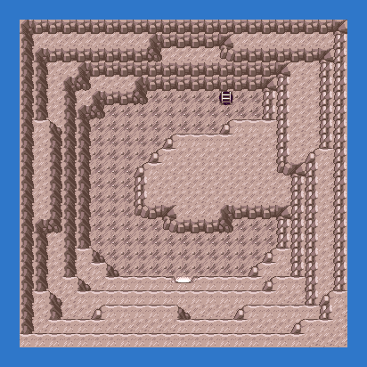
Event 1: Guzzlord
Dark/Dragon, level 55, from eight badges. Fairy moves hit it four times over.
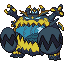
Legendary Pokémon here
Static encounters: walk up and press A. Caught = gone for good; beaten or fled = back next visit.
Catch ’Em All! Grass & caves
 | Zubat: | LV30 | Common | MDEN |
 | Sableye: | LV30 | Common | MDEN |
 | Skorupi: | LV35–36 | Uncommon | MDEN |
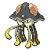 | Toedscruel: | LV34–35 | Uncommon | MDEN |
 | Skarmory: | LV34–35 | Uncommon | MDEN |
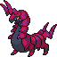 | Scolipede: | LV34–35 | Uncommon | MDEN |
 | Stonjourner: | LV33 | Uncommon | MDEN |
 | Silicobra: | LV35 | Uncommon | MDEN |
 | Donphan: | LV30 | Uncommon | MDEN |
 | Stunfisk: | LV30 | Uncommon | MDEN |
 | Axew: | LV34 | Uncommon | MDEN |
 | Klefki: | LV33–35 | Uncommon | MDEN |
 | Sneasler: | LV34–35 | Uncommon | MDEN |
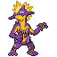 | Toxtricity (Amped): | LV30 | Uncommon | MDEN |
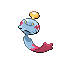 | Chimecho: | LV33–34 | Uncommon | MDEN |
 | Alolan Sandslash: | LV32–34 | Uncommon | MDEN |
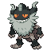 | Perrserker: | LV34–35 | Uncommon | MDEN |
 | Croagunk: | LV33–34 | Uncommon | MDEN |
 | Durant: | LV35 | Uncommon | MDEN |
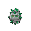 | Ferroseed: | LV31–32 | Uncommon | MDEN |
 | Salandit: | LV33 | Uncommon | MDEN |
 | Sandslash: | LV34 | Uncommon | MDEN |
 | Grimer: | LV32 | Uncommon | MDEN |
 | Mawile: | LV32 | Uncommon | MDEN |
 | Bellossom: | LV30 | Uncommon | MDEN |
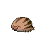 | Swinub: | LV33 | Uncommon | MDEN |
 | Shedinja: | LV34–35 | Rare | MDEN |
 | Venonat: | LV30–31 | Rare | MDEN |
 | Togedemaru: | LV30 | Rare | MDEN |
 | Dugtrio: | LV31–32 | Rare | MDEN |
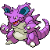 | Nidoking: | LV33–34 | Rare | MDEN |
 | Grafaiai: | LV35 | Rare | MDEN |
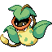 | Victreebel: | LV31–33 | Rare | MDEN |
 | Klink: | LV30–32 | Rare | MDEN |
 | Ariados: | LV33–34 | Rare | MDEN |
 | Beedrill: | LV33–34 | Rare | MDEN |
 | Trapinch: | LV34 | Rare | MDEN |
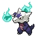 | Alolan Marowak: | LV34 | Rare | MDEN |
 | Ivysaur: | LV33–35 | Rare | MDEN |
 | Tinkatuff: | LV34 | Rare | MDEN |
 | Roserade: | LV34–35 | Rare | MDEN |
 | Foongus: | LV35 | Rare | MDEN |
‹ Side questsQuest: Cave of Origin and Sootopolis (8 badges, LV55–70) · 1 of 3Next: Cave of Origin B1F ›
145
Side Quests